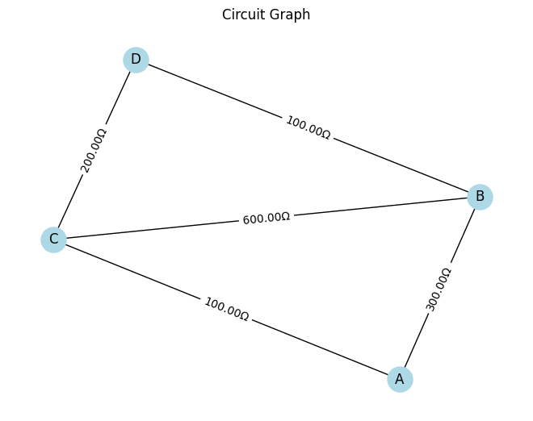
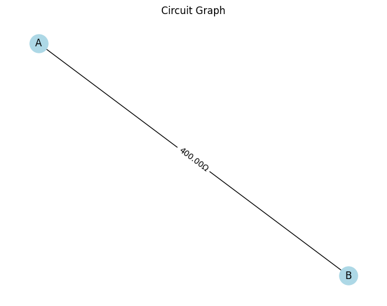

🧮 Problem 1: Equivalent Resistance Using Graph Theory
🔍 1. Motivation
Determining equivalent resistance in a circuit with multiple resistors is a classic challenge in physics and engineering. While simple circuits can be solved with series and parallel rules, complex circuits with many junctions, loops, and nested resistors require more powerful methods.
Graph theory provides a modern and efficient approach: - Nodes represent junctions, - Edges represent resistors, weighted by their resistance values.
This structure allows us to apply algorithms from computer science to automate the simplification process, which is especially useful in simulation software, electrical optimization, and network design.
🧠 2. Theory and Concept
🧷 Key Idea:
Model the circuit as an undirected weighted graph, then simplify it by reducing series and parallel edges iteratively until the graph consists of a single edge between the input and output nodes.
📐 Series Combination:
If two resistors \( R_1 \) and \( R_2 \) are in series, their equivalent resistance is:
🔀 Parallel Combination:
If \( R_1 \) and \( R_2 \) are in parallel, the equivalent resistance is:
🧩 3. Algorithm Overview
📌 Goal:
Reduce the circuit to a single resistor between the start and end nodes.
🔁 Steps:
- Build a graph: Use
networkxto represent the circuit. - Detect series and parallel connections:
- Series: Node with degree 2 (not start/end) → collapse into one resistor.
- Parallel: Multiple edges between the same pair of nodes → merge.
- Iteratively reduce the graph.
- Return the resistance between start and end nodes.


🧪 5. Test Examples
⚡ Example 1: Series Circuit
G = nx.MultiGraph()
G.add_edge('A', 'C', resistance=10)
G.add_edge('C', 'B', resistance=20)
➡ Result: \( R_{\text{eq}} = 30 \, \Omega \)
🔁 Example 2: Parallel Circuit
G = nx.MultiGraph()
G.add_edge('A', 'B', resistance=10)
G.add_edge('A', 'B', resistance=20)
➡ Result: \( R_{\text{eq}} = \frac{1}{\frac{1}{10} + \frac{1}{20}} = 6.67 \, \Omega \)
🧠 Example 3: Nested Configuration
G = nx.MultiGraph()
G.add_edge('A', 'X', resistance=5)
G.add_edge('X', 'B', resistance=5)
G.add_edge('A', 'B', resistance=10)
➡ Series path: 5 + 5 = 10 → Parallel with 10
Final \( R_{\text{eq}} = 5 \, \Omega \)
📈 6. Visualization
Each step of simplification is visualized using matplotlib, helping to trace the collapse of the network from a full graph into a single resistor.
🧩 7. Efficiency and Improvements
💡 Complexity:
- Each iteration of simplification runs in approximately \( O(n) \) over nodes and edges.
- Efficient for small to medium circuits.
🚀 Improvements:
- Implement Kirchhoff’s Laws and use matrix methods for large networks.
- Add support for voltage/current sources for full circuit analysis.
- Integrate with symbolic solvers like
sympyfor symbolic reduction.
🧲 8. Real-World Applications
- Circuit Design Tools: Auto-reducing complex resistor networks.
- Optimization Algorithms: Finding paths of least resistance.
- Education: Teaching simplification via interactive simulations.
- Network Analysis: Modeling traffic, fluid flow, or thermal resistance.
✅ 9. Conclusion
Using graph theory, we've built an automated system that: - Models circuits as graphs, - Reduces them through series and parallel rules, - Outputs equivalent resistance — even in complex, nested configurations.
This approach gives both computational power and conceptual clarity — a true fusion of physics and computer science.